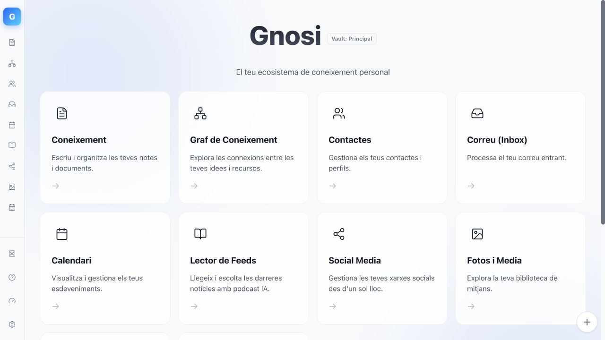

Duplicated effort
The same source and metadata copied across your reference manager, reading notes and project board.
Read, annotate, connect and cite PDFs, websites and books in one local workspace. Your notes and data remain portable Markdown.

A quick tour of the reader, graph and research workspace in Gnosi. No account, no mandatory cloud and no lock-in.
References in one tool, project views in another, notes elsewhere and the final paper in a fourth editor. The friction is not capturing more data, but keeping the trail from every claim back to evidence.
The same source and metadata copied across your reference manager, reading notes and project board.
Highlights and ideas drift away from the page, paragraph or original text that supports them.
Price hikes or policy changes can trap years of structured research behind vendor rules.
Sources, evidence, notes, links, project views and citations stay connected while files remain readable anywhere.
Start with your own material. AI can assist, but the workflow never depends on it.
Add sources via DOI, ISBN, arXiv, PMID, BibTeX or RIS. Save web pages and open PDFs or EPUBs inside your workspace.
Zotero-compatible import · Web ClipperAnnotate sources while preserving citations tied to page, paragraph, chapter or timestamp so claims stay verifiable.
PDF/EPUB Reader · Lineage trackingTurn reading notes into synthesis. Use wikilinks, knowledge graph, databases, boards, timelines and milestones.
Markdown · Graph · Database viewsInsert live Gnosi citations into Word or LibreOffice and generate bibliographies without duplicating libraries.
CSL/citeproc · Word · LibreOfficeReference management, readers, annotations, atomic reading notes and precise highlights share one context.
Markdown pages gain typed fields, relations, formulas, rollups and table, gallery, board, calendar or timeline views.
Use local or cloud models to ingest and query material while keeping provenance clear and synthesis human-controlled.
Gnosi uses standard files as the source of truth and rebuildable indexes for speed. Inspect, copy, version and migrate your knowledge anytime.
The fastest path is the desktop build. Native and Docker deployments remain available for technical users and servers.
The backend is included. Download automatically detects your operating system (Mac, Windows or Linux).
Download GnosiBeta builds are not yet signed. On macOS, use right-click → Open the first time.Run Python and Node directly on the host. Recommended for self-hosting and contributing.
git clone git@github.com:ismigar/Gnosi.git
cd Gnosi/apps/gnosiUse the containerized deployment when server infrastructure fits best.
docker compose up -d --buildIt started to eliminate duplication between Notion, Obsidian and Mendeley. Shared with the community as free software.
Start with a local vault and import a real source. Notes, links and citations remain files under your control.